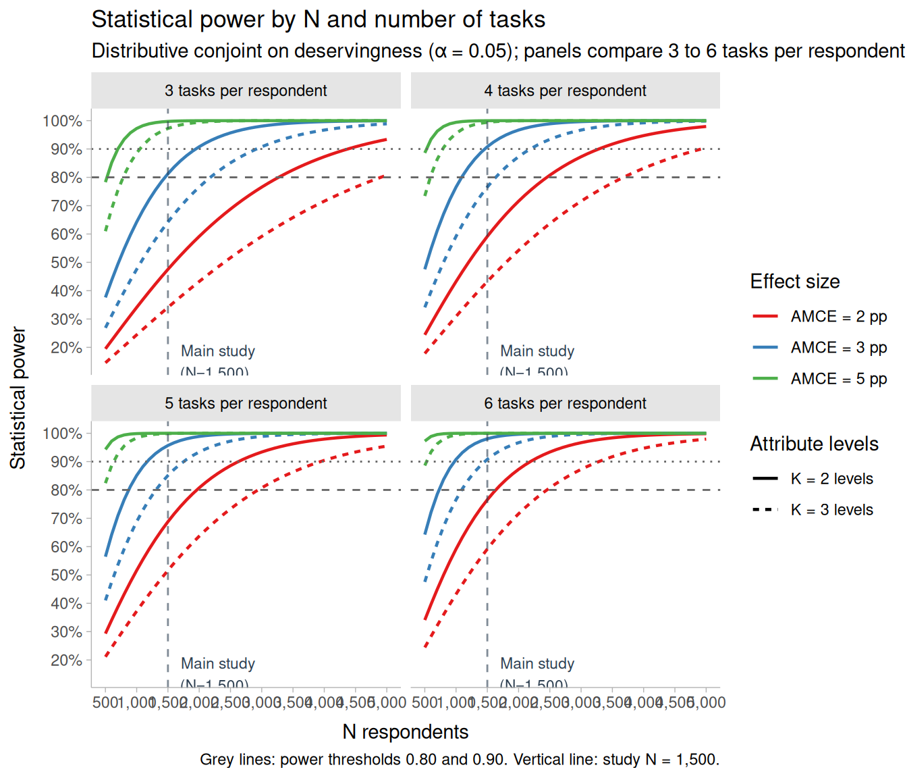
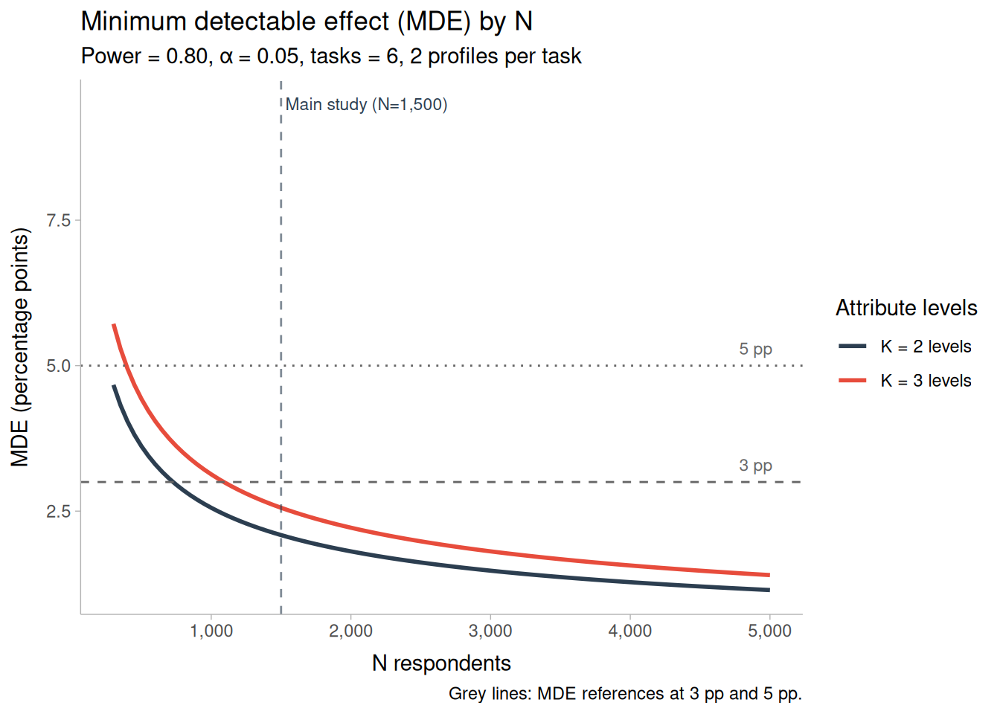
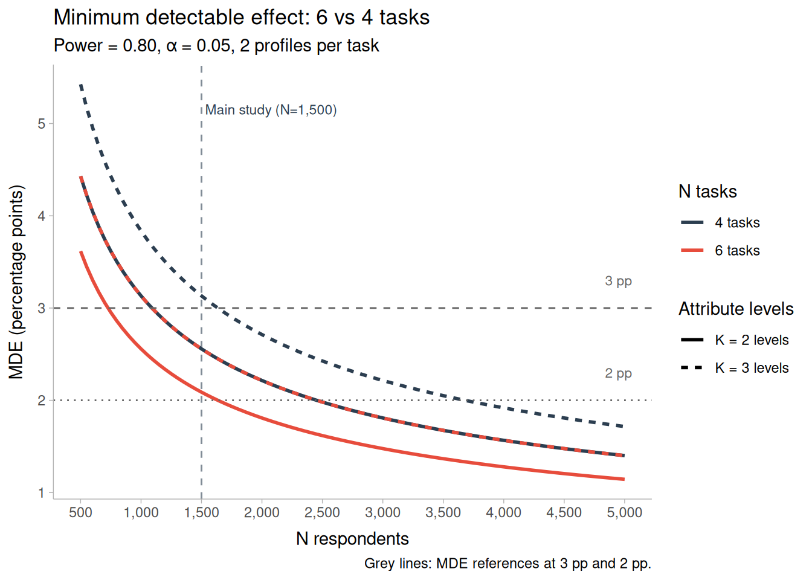
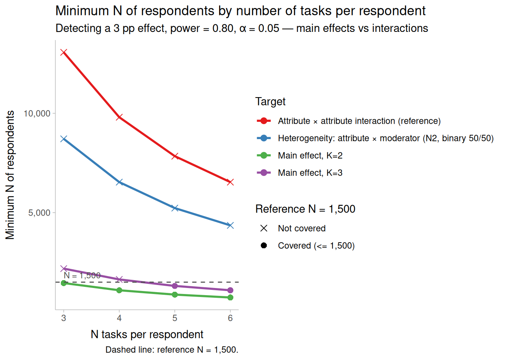
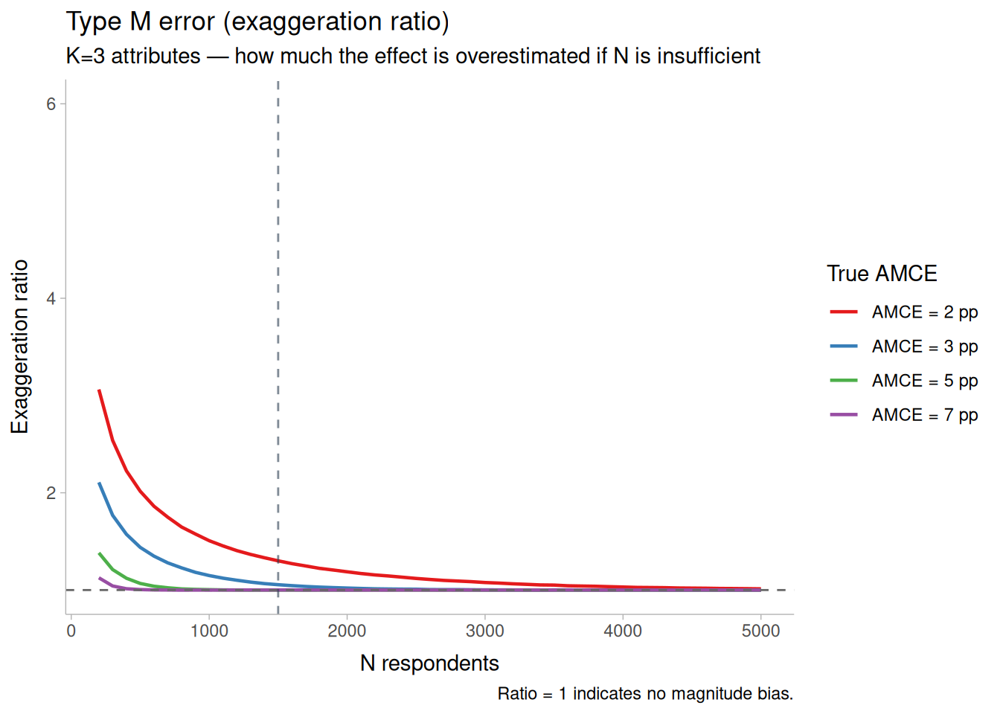

| Attribute family | Levels | Profiles | Power at 3 pp | Type M | Type S |
|---|---|---|---|---|---|
| K = 2 (Need, Control, Reciprocity, Attitude, Sex) | 2 | 18,000 | 98.1% | 1.012 | 1.1e-09 |
| K = 3 (Effort, Identity) | 3 | 18,000 | 90.8% | 1.057 | 8.5e-08 |
| Note: | |||||
| Type M is the exaggeration ratio: how much a statistically significant estimate overstates the true effect. Type S is the probability that a significant estimate has the wrong sign. Both are negligible here, which is what adequate power looks like. |
4 Power analysis for the distributive conjoint
4.1 Scope
This document asks one question—is a sample of 1,500 respondents large enough to test the hypotheses of the distributive conjoint?—and answers it using the analytic approach of Schuessler & Freitag (2020), implemented in their cjpowR package. It is the companion piece to the design chapter (?sec-conjoint), which specifies the attributes, the randomization and the estimators; here we take that design as given and ask only what it can detect.
The answer arrives in two parts. For main effects the design is comfortably powered, with room to spare even if tasks are cut from six to four. For heterogeneity—the moderation hypotheses H8–H10—the same formula says the design falls short by a factor of about 4. That second verdict, however, rests on an assumption this design violates in a favourable direction, so it should be read as an upper bound on what we need rather than as a verdict on what we have. The simulation study documented in processing/power_declaredesign.R supplies the complementary lower bound.
ImportantHow to read every number in this document
All figures below are conservative upper bounds, not point estimates. Three assumptions drive that, and they do not all push the same way.
- Binary outcome (violated, in our favour). The formula was derived for forced-choice conjoints, where the outcome is a binary pick and its variance is therefore Bernoulli. Our outcome is a continuous share of a fixed fund. A binary outcome carries the maximum variance a bounded 0–100 variable with mean 50 can have; any realistic spread of allocated shares is lower, and lower outcome variance means more power at the same sample size. The formula charges us the worst case regardless.
- Balanced moderator (assumed, against us if false). The interaction rows assume the moderator splits 50/50. Schuessler & Freitag (2020) are explicit that conditional AMCEs require the covariate’s real marginal distribution; Table 4.5 quantifies the cost of getting this wrong.
- Dichotomised moderator (a different estimand). The interaction rows treat the moderator as binary, whereas the confirmatory hypotheses interact the attribute with a standardised continuous moderator. Dichotomising discards information, so this too is conservative.
The formulae themselves were verified against equations (4) and (6) of Schuessler & Freitag (2020) and against cjpowR directly; they agree to within 0.25%, always on the conservative side.
4.2 What drives power in a conjoint
Three facts from Schuessler & Freitag (2020) shape everything that follows, and the first two are counter-intuitive.
The number of attributes does not matter. Because attributes are randomised independently, each AMCE is a simple comparison of means that averages over all the others. Adding attributes does not dilute power. What matters is the number of levels of the attribute being tested: with \(K\) levels, each level’s mean is estimated from roughly \(N/K\) profiles, so more levels means larger standard errors. Studies should therefore be powered for the attribute with the most levels, not merely the one with the smallest expected effect.
What counts is profile evaluations, not respondents. The effective sample size is \(N_{\text{resp}} \times \text{tasks} \times 2\). Six tasks per respondent yield 18,000 profile evaluations from 1,500 people. This is why the number of tasks trades off directly against the number of respondents.
Effect sizes here are in percentage points of the allocated share. A 3 pp AMCE moves an applicant from 50% to 53% of the fund—about CLP 60,000 of the CLP 2,000,000 at stake. This is not the same scale as the published binary AMCEs Schuessler & Freitag (2020) survey, which measure changes in choice probability, so their benchmark distribution (median ≈ 5 pp) orients but does not translate directly.
4.2.1 Which effect size, and why 3 pp
This document sizes everything for a 3 pp effect. That is not a placeholder: it is the binding case of this design. Of the two attributes with three levels, the assumed true effects are Effort at 6 pp and Identity at 3 pp, so Identity—most levels, smallest expected effect—is what the design must clear.
| Target | Attribute | Levels | Assumed effect |
|---|---|---|---|
| This document | Identity | 3 | 3 pp |
| Simulation study | Effort | 3 | 6 pp |
The simulation in processing/power_declaredesign.R sizes for Effort instead, because Effort is the attribute the moderation hypotheses interact with the moderator. The two documents therefore answer different questions and their tables are not directly comparable: this one asks what the most demanding attribute requires, the simulation asks what power we have for the hypothesis we will actually test. Neither figure is wrong, and neither should be changed to match the other.
The choice of 3 pp follows the paper’s own advice on effect sizes. Schuessler & Freitag (2020) survey 258 AMCEs from 15 highly cited conjoints and find a median near 5 pp, but explicitly caution against sizing from that distribution: different research questions are not comparable, and publication bias inflates it. They recommend subject-specific priors instead, which is what the effect vector here does—it is anchored on Gilgen (2022), a comparable scholarship-allocation experiment. The same section warns that Cohen’s \(d\) misleads in this setting: a “small” \(d = 0.2\) corresponds to a 10 pp AMCE, which fewer than a quarter of published estimates exceed.
4.3 Main effects
4.3.1 Power at the study’s sample size
Under equation (4) of Schuessler & Freitag (2020), the minimum effective sample size to detect an AMCE \(\delta_1\) is
\[N = \frac{K}{2} \cdot \frac{(z_{1-\alpha/2} + z_{\kappa})^2}{\delta_1^2} \left( \frac{(\delta_0 + \delta_1)(1 - (\delta_0 + \delta_1))}{0.5} + \frac{\delta_0(1 - \delta_0)}{0.5} \right),\]
where \(\delta_0\) is set to 0.5, the value that maximises the variance and so yields the conservative bound. Table 4.1 evaluates this at the study’s 18,000 profile evaluations.
Both families clear the conventional 0.80 threshold with margin: 98.1% for two-level attributes and 90.8% for the two three-level attributes. Turning the formula around, detecting a 3 pp effect on a three-level attribute at 80% power requires about 1,090 respondents, so the planned 1,500 leaves roughly a third of the sample as headroom.
The Type M and Type S columns are worth a moment. An underpowered study is dangerous not only because it misses real effects, but because the effects it does declare significant are inflated—the point Schuessler & Freitag (2020) import from the Type S/M literature. A Type M ratio near 1 means no such inflation. Figure 4.5 shows how quickly that guarantee erodes at smaller samples.
4.3.2 How many tasks?
Because power depends on profile evaluations rather than respondents, the number of tasks per respondent and the number of respondents are substitutes. Figure 4.1 traces this directly.

At six tasks the design clears 80% power for a 3 pp effect on either attribute type well before 1,500 respondents. Cutting to four tasks shifts every curve right but does not breach the threshold at the planned sample; only at three tasks does the three-level, 2 pp combination become uncomfortable.
4.3.3 Minimum detectable effect
The complementary view fixes power at 0.80 and asks what effect size the design can resolve.

| N tasks | N profiles | MDE, K=2 attribute | MDE, K=3 attribute |
|---|---|---|---|
| 6 | 18,000 | 2.1 pp | 2.6 pp |
| 4 | 12,000 | 2.6 pp | 3.1 pp |
At the planned sample the design resolves effects of about 2.1 pp on two-level attributes and 2.6 pp on three-level ones. Dropping to four tasks costs roughly half a percentage point of sensitivity, taking the three-level figure to 3.1 pp—still at the 3 pp target, but without margin.

| Target | Minimum AMCE | Most demanding attribute | Min N (6 tasks) | Min N (4 tasks) |
|---|---|---|---|---|
| Main effects, K=2 | 3 pp | Binary | 727 | 1,091 |
| Main effects, K=3 | 3 pp | Effort / Identity | 1,091 | 1,636 |
| Main effects, K=3, power = 0.90 | 3 pp | Effort / Identity | 1,460 | 2,190 |
4.4 Interactions and heterogeneity
This is where the design is genuinely constrained. Equation (6) of Schuessler & Freitag (2020) gives the minimum sample for an interaction coefficient \(\delta_3\):
\[n = \frac{K_l K_m}{4} \cdot \frac{(z_{1-\alpha/2} + z_{\kappa})^2}{\delta_3^2} \left( \frac{A}{p_{00}} + \frac{B}{p_{10}} + \frac{C}{p_{01}} + \frac{D}{p_{11}} \right),\]
where \(A\) through \(D\) are cumulative response probabilities and \(p_{00} \dots p_{11}\) the joint treatment probabilities of the two interacting elements. The inflation relative to a main effect comes from the \(K_l K_m / 4\) term—it is not a fixed multiplier, and in particular it is not the factor of two that a naive shortcut would suggest.
| N tasks | Main effect, K=2 | Main effect, K=3 | Heterogeneity: attribute × moderator (N2, binary 50/50) | Attribute × attribute interaction (reference) |
|---|---|---|---|---|
| 3 | 1454 | 2181 | 8714 | 13070 |
| 4 | 1091 | 1636 | 6535 | 9803 |
| 5 | 873 | 1309 | 5228 | 7842 |
| 6 | 727 | 1091 | 4357 | 6535 |

At six tasks, a three-level main effect needs about 1,091 respondents while the same attribute interacted with a binary moderator needs about 4,357—a factor of 4. Taken at face value, the planned sample is ample for every main effect and short for every moderation effect.
Two qualifications matter before that is read as a verdict. First, the attribute-by-attribute column is a sizing reference only: no hypothesis of this study interacts two attributes, since all moderation hypotheses involve a respondent characteristic. Second, and more importantly, the whole table inherits the binary-outcome assumption, which is precisely the assumption our continuous fixed-sum outcome violates in our favour. The simulation study exists to remove it.
4.4.1 Sensitivity to the moderator’s distribution
The interaction rows assume a moderator that splits evenly. That assumption is doing real work, and it is the one most likely to fail in practice.
| Moderator split | Min N (6 tasks) | vs balanced |
|---|---|---|
| 50/50 | 4,357 | — |
| 40/60 | 4,539 | +4% |
| 30/70 | 5,189 | +19% |
| 20/80 | 6,811 | +56% |
A 30/70 split raises the requirement by about a fifth; a 20/80 split by more than half. Once the realised distribution of each moderator is known, these numbers should be recomputed with the observed marginals rather than the balanced default—n_min_interaction() accepts the joint probabilities directly for this purpose.
4.5 Type M error
A final diagnostic, and the reason power analysis matters even when a result is “significant”.

The exaggeration ratio is the factor by which a statistically significant estimate overstates the true effect. At the planned sample it sits essentially at 1 for every effect size considered, meaning estimates that clear significance are not systematically inflated. Below roughly 500 respondents the ratio climbs steeply for small true effects: a study that size would not merely miss real 2 pp effects, it would report the ones it caught as two or three times larger than they are. This is the concrete cost of underpowering, and the reason the moderation analyses are framed as exploratory unless the simulation shows otherwise.
4.6 Summary
| Estimand | Requirement (6 tasks) | Covered at N = 1,500? |
|---|---|---|
| Main effect, K = 2 | 727 | Yes |
| Main effect, K = 3 (binding) | 1,091 | Yes |
| Heterogeneity, attribute × moderator | 4,357 | No, under the binary bound |
The design is well powered for all confirmatory main effects, with an MDE of 2.6 pp on the binding attribute and enough margin to absorb a reduction to four tasks if fieldwork requires it. For the moderation hypotheses the analytic bound is not met, but that bound assumes an outcome this study does not have. Whether the moderation hypotheses are adequately powered is therefore a question this document cannot settle on its own; it is settled, as far as it can be, by the simulation of the real continuous outcome reported alongside it.